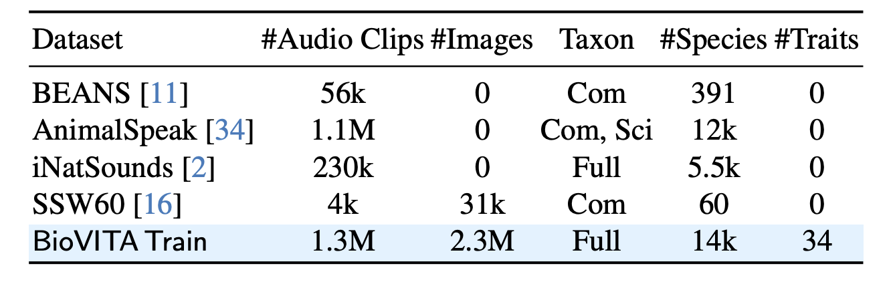
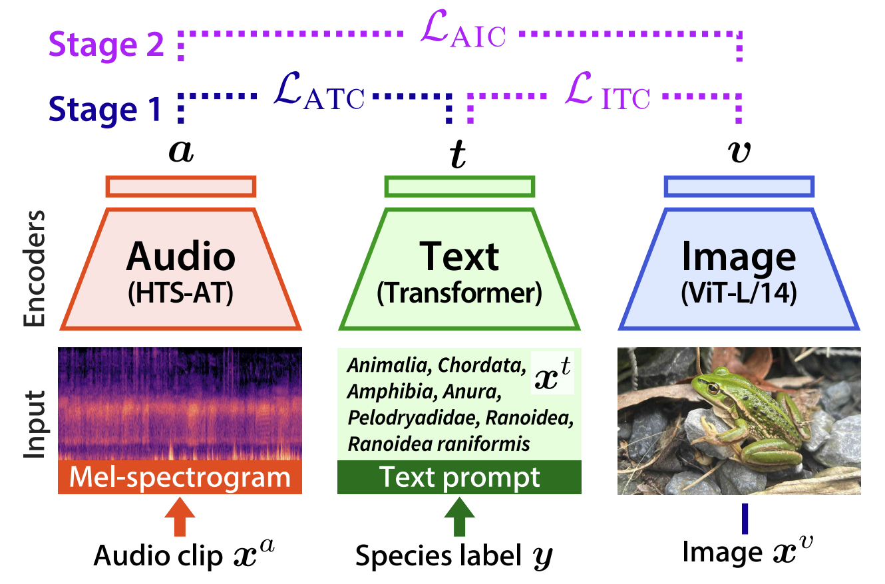
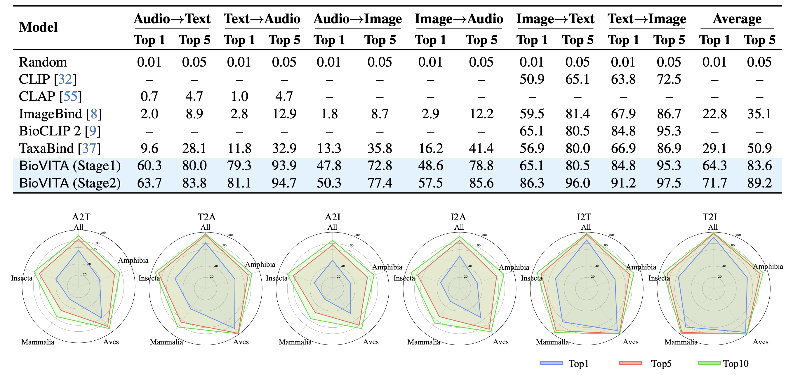
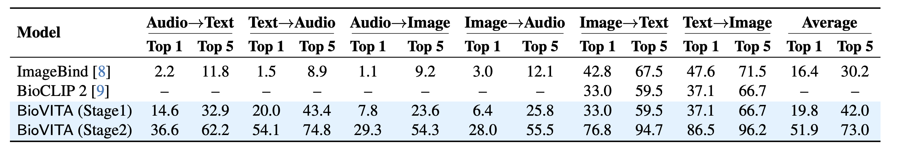
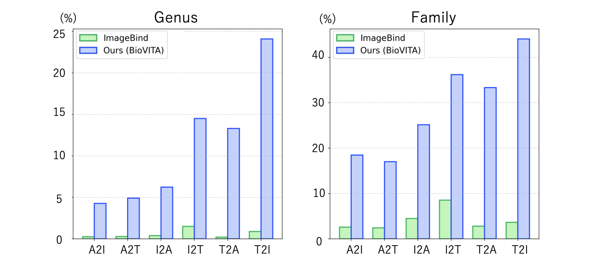

BioVITA Bench
We develop BioVITA Bench, a species-level retrieval benchmark spanning the six cross-modal directions. Our benchmark enables comprehensive analysis from multimodal, ecological, and generalization perspectives.

BioVITA Train
We introduce BioVITA Train, a training dataset for VITA alignment. We curate 1.3 million audio clips and 2.3 million images with textual taxonomic annotations, covering 14k species and 34 ecological traits.

BioVITA Model
BioVITA Model
BioVITA Model consists of three encoders. Building upon BioCLIP 2, we train the audio encoder in Stage 1, and jointly train the audio and text encoders in Stage 2.

Overview of Results
Species-level cross-modal retrieval
Our BioVITA effectively handles all retrieval scenarios and significantly outperforms the tri-modal baselines. Stage 2, which incorporates visual information, further improves all retrieval scenarios by providing complementary cues for robust VITA alignment.

Unseen subset
Despite encountering entirely novel taxa, BioVITA demonstrates robust generalization. Consistent with observations in seen scenarios, the improvement from Stage 1 to Stage 2 underscores the crucial role of incorporating visual modalities for enhancing generalization.

Error Analysis
The left plot reports, among all species-level errors, the proportion in which the retrieved sample belongs to the correct genus, and the right plot reports the proportion belonging to the correct family. This suggests that the learned representations successfully capture hierarchical taxonomic structure.

BibTeX
@article{shinoda2026biovita,
title={BioVITA: Biological Dataset, Model, and Benchmark for Visual-Textual-Acoustic Alignment},
author={Risa Shinoda and Kaede Shiohara and Nakamasa Inoue and Kuniaki Saito and Hiroaki Santo and Fumio Okura},
year={2026},
eprint={2603.23883},
archivePrefix={arXiv},
primaryClass={cs.CV},
url={https://arxiv.org/abs/2603.23883},
}